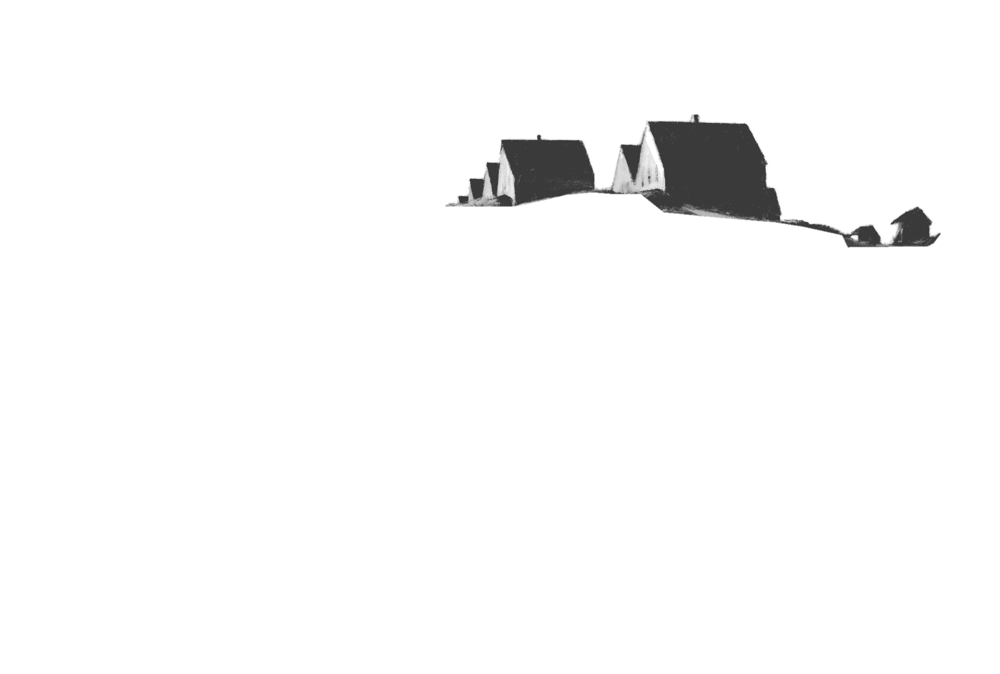
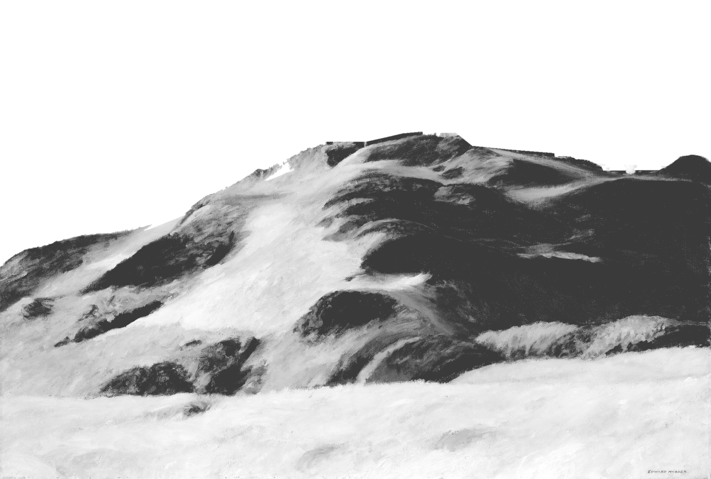
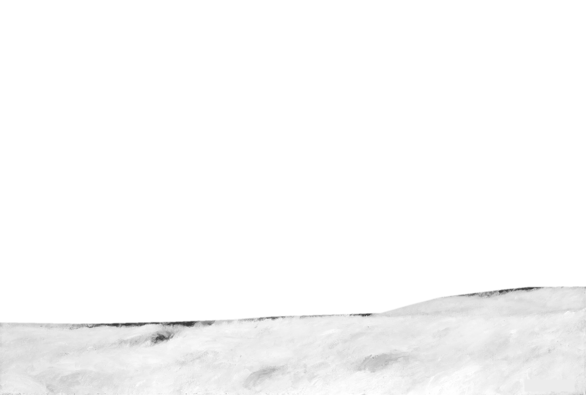
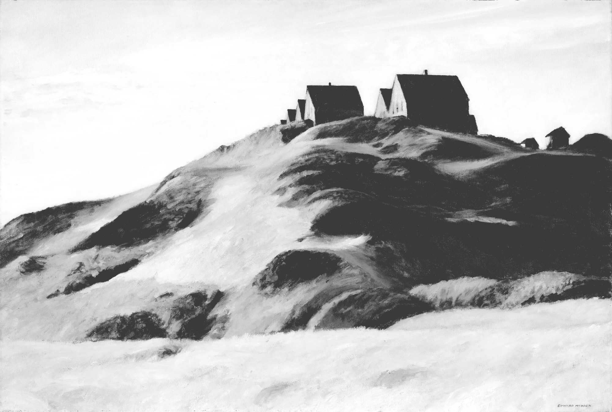

Polymarket
Remote · New York
Growth Intern
Sep 2026 – PresentDrive campus-level growth for Polymarket and support go-to-market initiatives for new product launches.




I keep returning to the same questions: where can a business win, why does that opportunity exist, and how do you turn insight into action?
Over the past few years I've built experience across consulting, venture capital, growth strategy and analytics, each offering a different lens on how businesses grow, compete and create value.
I've helped set investment strategy and source deals for a student-managed venture fund, led client engagements at a student-run consulting firm, and delivered research and analytics at KPMG.
I'm graduating in 2027 and interested in strategy-focused roles across consulting, venture capital and corporate strategy.
Remote · New York
Drive campus-level growth for Polymarket and support go-to-market initiatives for new product launches.
Harrisonburg, Virginia
Lead the associate team, set investment strategy, and oversee sourcing, diligence and portfolio monitoring for a $650K student-managed VC fund with 20+ portfolio companies.
Sourced and screened early-stage startups, evaluated founder pitches, and tracked portfolio performance for the fund.
Student-run consulting firm · Harrisonburg, Virginia
Lead business development and own the client engagement portfolio, managing portfolio directors, project managers and consultants.
Led a client engagement end to end: scoped the problem, delegated workstreams across four consultants, and presented final recommendations to the client.
Delivered pro bono client engagements, conducting market research, analyzing data and building recommendations, after completing a selective analyst program.
Harrisonburg, Virginia
Represent the student body to the College of Business Board of Advisors on programming, curriculum and student experience.
Consulting · McLean, Virginia
Supported program delivery through research and analysis, dashboard design, project management and Python automation. Synthesized 600+ reports in 3 weeks and improved dashboard runtime efficiency by 80%.
Harrisonburg, Virginia
Set organizational strategy and oversaw a 12-member executive board and 100+ general members. Achieved a top-15 international chapter ranking out of 340+ chapters.
Remote · San Francisco
Owned campus-level growth strategy, translating company-wide KPI targets into localized acquisition tactics. Prioritized high-impact events to accelerate verified-user growth and optimized budget allocation to improve acquisition efficiency while protecting brand quality.
Reston, Virginia
Owned go-to-market and customer-acquisition strategy for an all-in-one marketing, website, client communication and project-management SaaS aimed at the fragmented HVAC and home-services market.
An automated startup intelligence platform, currently in development. It discovers emerging companies and tracks early momentum signals across funding, hiring, product launches, accelerators, open-source activity and other public data, built on a deterministic-first AI architecture.
Led a consulting engagement for Cheapie's LLC, a fictional retail company used as a course case, to diagnose and resolve a team dynamics crisis. Using an evidence-based decision-making framework, I triangulated four independent evidence streams (organizational survey data, external stakeholder benchmarks, practitioner interviews and peer-reviewed literature) and traced the problem to a structural root cause: systematic internal promotion without formal management development.
The three-component solution drew on two large meta-analyses and projected gains in colleague satisfaction, lower quit intent among the highest-risk employee quartile, and higher revenue per employee across all 40 stores.
Led a three-person team studying how deal characteristics affect post-acquisition shareholder returns. We built a dataset of 46 transactions with Python and the Yahoo Finance API, calculated each acquirer's 365-day return after announcement, and ran multiple regression on transformational status (over 25% of acquirer market cap), industry alignment and deal size.
Transformational acquisitions drove roughly 43% lower returns and posed the greatest risk to shareholder value.
Project Manager on a pro bono engagement for the JMU Office of Residence Life, leading a five-person team through a full consulting cycle across four initiatives: Digital JACard, Dorms & Spaces, Involvement and Data Cleanup.
Recommendations were grounded in two waves of student survey data (about 4,580 Fall and 2,380 Spring respondents) and benchmarking against Temple, Penn State and the University of Pittsburgh to validate a mobile credential adoption strategy. The phased roadmap paired near-term, no-capital-outlay wins with a 12–18 month Digital JACard pilot, delivered as a client-ready deck and strategic whitepaper.
Consultant on a pro bono engagement to address enrollment disparities, specifically the underrepresentation of male College of Business students. The roadmap raised conversion through "Campus Engagement" and "Student Visibility": collaborative pop-up events and an overhaul of digital and print communications that align Honors College benefits with the career-focused motivations of business students.
With an eight-person team, built AquaStack, a modular water filtration venture, for the COB 300 Integrated Business Plan. I led analytical work across marketing, operations, management and finance to evaluate customer needs, size global markets and define a viable business model.
The plan includes competitive analysis, supply chain feasibility across U.S. and Asia-Pacific suppliers, a five-year financial forecast, and a UNICEF-aligned donation strategy, tied together with risk and growth analysis.
With a team of analysts, developed a growth strategy for BrewMasters Inc. as the capstone before promotion to Consultant. The proposal addressed declining brand loyalty and operational bottlenecks through a "tech-driven" transformation: self-service kiosks and a personalized mobile app.
Developed a strategic roadmap for the Harrisonburg Department of Public Transportation through the Madison Consulting Club Analyst Program. The "Scalable Bus Management" model shifts to smaller vehicles in off-peak hours and adds AI-driven dynamic scheduling, aimed at cutting fuel and maintenance costs.
Solo strategic engagement through the Madison Consulting Club Analyst Program to capture a $175M educational tourism market. The proposal turned underused resort assets into "STEM Adventure Programs" for K-12 field trips and family workshops, using a cost-synergy model built on cross-trained staff and repurposed facilities.
A COB 202 course project proposing a corporate volunteering initiative for EY to address homelessness in New York City, which affects about 350,000 people, including roughly 100,000 school-aged children. The two-phase strategy pairs hands-on shelter volunteering with pro bono consulting to improve shelter operations, aligned to EY's values through CSR and ESG analysis.
Open to conversations about strategy roles starting after graduation.